Autolite Positive Engagement Starters · 26-02-04a
-
Raise the vehicle on a hoist (8-Cylinder engine only).
-
Disconnect the starter cable at the starter terminal.
-
On a Montego with power steer-
- ing (8-cyl. engine) or a Mustang, Fairlane, Montego and Cougar with 428 CID engine, disconnect and lower the idler arm from the frame. Push the bolts back through the frame.
-
Remove the starter mounting bolts. Remove the starter assembly (Fig. 2).
- (Fig. 2).5. Position the starter assembly to the flywheel housing, and start the mounting bolts.
-
Snug all bolts while holding the starter squarely against its mounting surface and fully inserted into the pilot hole. Torque the bolts to specification.
-
Connect the starter cable.
-
Install the idler arm bracket (if removed), and lower the vehicle.
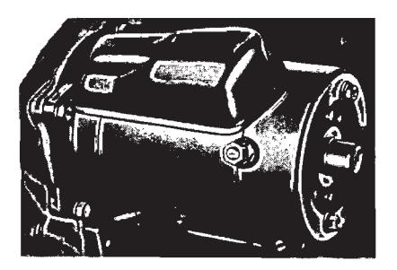
Fig. 2 — Starter Mounting
3 Positive Engagement Starter Testing
Road Service
On road service calls, connect a booster battery to the system for cases of a starter that will not crank the engine or a starter that cranks the engine very slowly. If the starter does not turn the engine over, even with the booster battery attached, refer to the following tests. Be certain that correct battery polarity is observed when using a booster battery; positive to positive, and negative to negative connection of the auxiliary cables.
On Vehicle Testing
Starter Drive and Starter Test
Flood the engine by pumping the accelerator eight to ten times. Turn the ignition key to start and hold it in the start position. The engine should fire immediately, but should not start and run. The starter should continue to crank the engine. This indicates a normal acceptable starter drive. If the engine stops turning and the starter spins at high speed, the drive is not operating properly and should be replaced. Whenever possible, remove the plunger cover and observe the plunger pole operation on the vehicle. Do not damage the exposed switch during starter installation or removal.
Temporarily connect a heavy jumper from the battery positive terminal to the starter terminal. If the starter will not crank the engine, the starter is not operating properly. Repair or replace the starter.
Starter Cranking Circuit Test
Excessive resistance in the starter circuit can be determined from the results of this test. Make the test connections as shown in Fig. 3. Crank the engine with the ignition OFF. This is accomplished by disconnecting and grounding the high tension lead from the ignition coil and by connecting a jumper from the battery terminal of the starter relay to the S terminal of the relay.
The voltage drop in the circuit will be indicated by the voltmeter (0 to 2 volt range). Maximum allowable voltage drop should be:
-
With the voltmeter negative lead connected to the starter terminal and the positive lead connected to the battery positive terminal (Fig. 3, connection (1)… 0.5 volt.
-
With the voltmeter negative lead connected to the battery terminal of the starter relay and the positive lead connected to the positive terminal of the battery (Fig. 3, connection (2)… 0.1 volt.
-
With the voltmeter negative lead connected to the starter terminal of the starter relay and the positive lead connected to the positive terminal of the battery (Fig. 3, connection (3)…0.3 volt.
-
With the voltmeter negative lead connected to the negative terminal of the battery and the positive lead connected to the engine ground (Fig. 3, connection (4)… 0.1 volt.
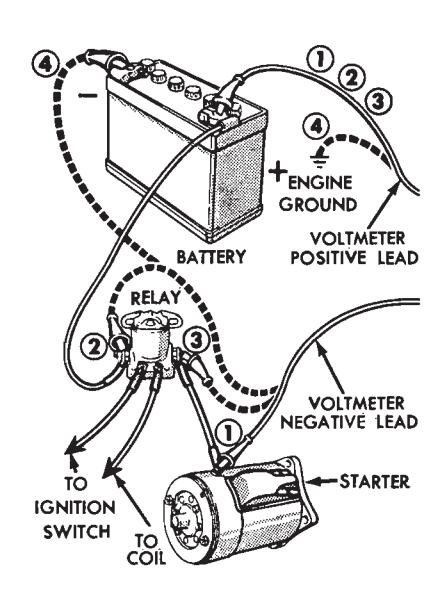
Fig. 3 — Starter Cranking Circuit Test
Starter Load Test
Connect the test equipment as shown in Fig. 4. Be sure that no current is flowing through the ammeter and heavy-duty carbon pile rheostat portion of the circuit (rheostat at maximum counterclockwise position).
Crank the engine with the ignition OFF, and determine the exact reading on the voltmeter. This test is accomplished by disconnecting and grounding the high tension lead from the ignition coil, and by connecting a jumper from the battery terminal of the starter relay to the ignition switch terminal of the relay.
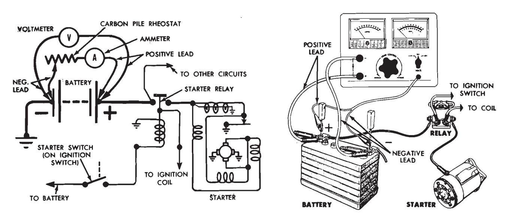
Fig. 4 — Starter Load Test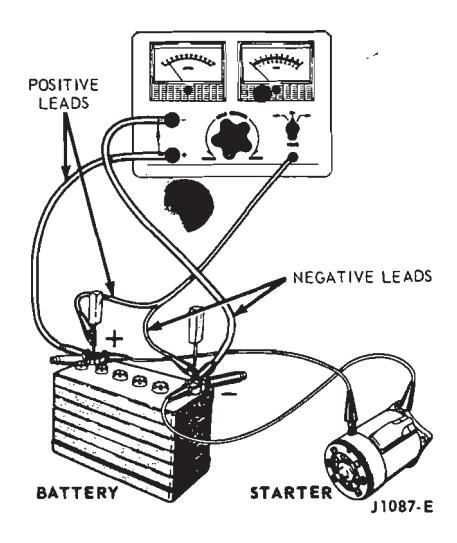
Fig. 5 — Starter No-Load Test on Test BenchStop cranking the engine, and reduce the resistance of the carbon pile until the voltmeter indicates the same reading as that obtained while the starter cranked the engine. The ammeter will indicate the starter current draw under load.
Bench Tests
Starter No-Load Test
The starter no-load test will uncov- er such faults as open or shorted windings, rubbing armature, and bent armature shaft. The starter can be tested, at no-load, on the test bench only.
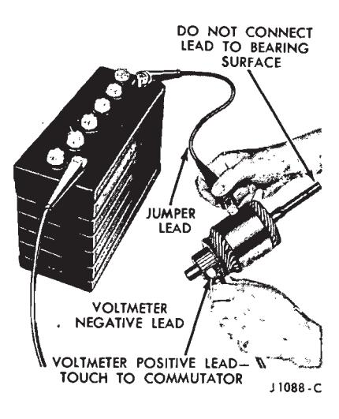
Fig. 6 — Armature Grounded Circuit TestMake the test connections as shown in Fig. 5. The starter will run at noload. Be sure that no current is flowing through the ammeter (rheostat at maximum counterclockwise position). Determine the exact reading on the voltmeter.
Disconnect the starter from the battery, and reduce the resistance of the rheostat until the voltmeter indicates the same reading as that ob- tained while the starter was running. The ammeter will indicate the starter noload current draw.
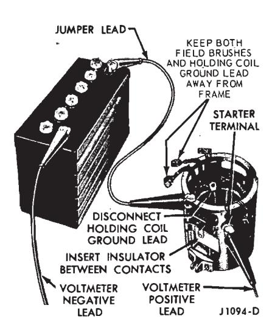
Fig. 7 — Field Grounded Circuit TestArmature Open Circuit Test — on Test Bench
An open circuit armature may sometimes be detected by examining the commutator for evidence of burning. A spot burned on the commutator is caused by an arc formed every time the commutator segment, connected to the open circuit winding, passes under a brush.
Armature and Field Grounded Circuit Test — on Test Bench
This test will determine if the winding insulation has failed, permitting a conductor to touch the frame or armature core.
To determine if the armature windings are grounded, make the connections as shown in Fig. 6. If the voltmeter indicates any voltage, the wind- ings are grounded.
Grounded field windings can be detected by making the connections as shown in Fig. 7. If the voltmeter indicates any voltage, the field windings are grounded.
4 Positive Engagement Starter Overhaul
Use the following procedure when it becomes necessary to completely overhaul the starter. Fig. 8 illustrates a partially disassembled starter.
Disassembly
-
Loosen the brush cover band retaining screw and remove the brush cover band and the starter drive plunger lever cover. Observe the lead positions for assembly and then remove the commutator brushes from the brush holders.
-
Remove the through bolts, starter drive end housing, and the starter drive plunger lever return spring. If the starter has needle bearings, and the bearing is not being replaced, insert a dummy shaft in the housing to prevent loss of any of the bearing needles. Before assembly, apply a small amount of grease to the needles.
-
Remove the pivot pin retaining the starter gear plunger lever and remove the lever and the armature.
-
Remove the stop ring retainer. Remove and discard the stop ring retaining the starter drive gear to the end of the armature shaft, and remove the starter drive gear assembly.
-
Remove the brush end plate.
-
Remove the two screws retaining the ground brushes to the frame.
-
On the field coil that operates the starter drive gear actuating lever, bend the tab up on the field coil retaining sleeve and remove the sleeve.
-
Remove the three coil retaining screws, using tool 10044-A and an arbor press (Fig. 9). The arbor press prevents the wrench from slipping out of the screw. Unsolder the field coil leads from the terminal screw, and remove the pole shoes and coils from the frame. Use a 300-watt iron.
-
Cut (or unsolder) the insulated brush leads from the field coils, as close to the field connection point as possible.
-
Remove the starter terminal nut, washer, insulator and terminal from the starter frame. Remove any excess solder from the terminal slot.
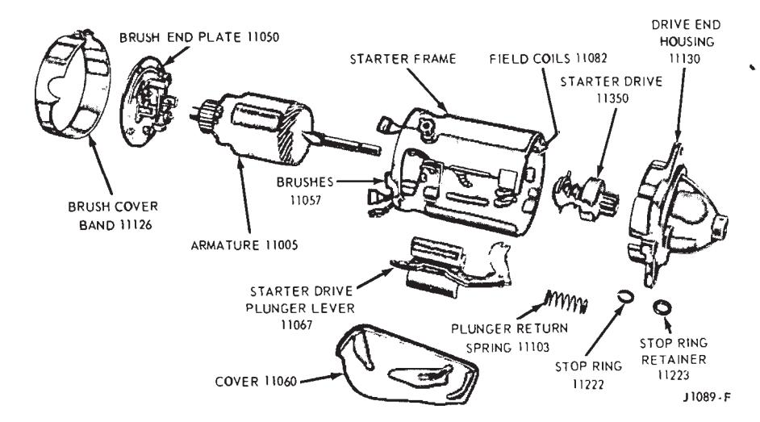
Fig. 8 — Starter Disassembled
Cleaning and Inspection
-
Use a brush or air to clean the field coils, armature, commutator, armmature shaft, brush end plate, and drive end housing. Wash all other parts in solvent and dry the parts.
-
Inspect the armature windings for broken or burned insulation and unsoldered connections.
-
Check the armature for open circuits and grounds.
-
Check the commutator for runout (Fig. 10). Inspect the armature shaft and the two bearings for scoring and excessive wear. On a starter with needle bearings apply a small amount of grease to the needles. If the commutator is rough, or more than 0.005 inch out-of-round, turn it down.
-
Check the brush holders for broken springs and the insulated brush holders for shorts to ground. Tighten any rivets that may be loose. Replace the brushes if worn to 1/4 inch in length.
-
Check the brush spring tension. Replace the springs if the tension is not within specified limits (40 ounces minimum).
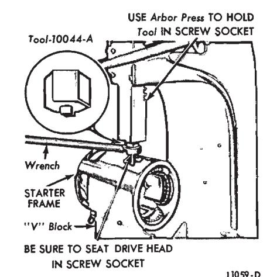
Fig. 9 — Pole Shoe Screw Removal -
Inspect the field coils for burned or broken insulation and continuity. Check the field brush connections and lead insulation. A brush kit and a contact kit are available. All other assemblies are to be replaced rather than repaired.
-
Examine the wear pattern on the starter drive teeth. The pinion teeth must penetrate to a depth greater than 1/2 the ring gear tooth depth (Fig. 11), to eliminate premature ring gear and starter drive failure.
-
Replace starter drives and ring gears with milled, pitted or broken teeth or that show evidence of inadequate engagement (Fig. 11).
Assembly
-
Install the starter terminal, insulator, washers, and retaining nut in the frame (Fig. 12). Be sure to position the slot in the screw perpendicular to the frame end surface.
-
Position the coils and pole piec- es, with the coil leads in the terminal screw slot, and then install the retaining screws (Fig. 9). As the pole shoe screws are tightened, strike the frame several sharp blows with a soft-faced hammer to seat and align the pole shoes, then stake the screws.
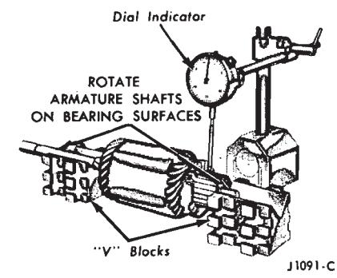
Fig. 10 — Commutator Runout Check -
Install the solenoid coil and retainer and bend the tabs to retain the coils to the frame.
-
Solder the field coils and solenoid wire to the starter terminal using rosin core solder. Use a 300-watt iron.
-
Check for continuity and grounds in the assembled coils.
-
Position the new insulated field brushes lead on the field coil terminal. Install the clip provided with the brushes to hold the brush lead to the terminal. Solder the lead, clip, and terminal together, using rosin core solder (Fig. 12). Use a 300-watt iron.
-
Position the solenoid coil ground terminal over the nearest ground screw hole.
-
Position the ground brushes to the starter frame and install the retaining screws (Fig. 12).
-
Position the starter brush end plate to the frame with the end plate boss in the frame slot.
-
Apply a thin coating of Lubriplate 777 on the armature shaft splines. Install the starter motor drive gear assembly to the armature shaft and install a new retaining stop ring. Install a new stop-ring retainer.
-
Position the fiber thrust washer on the commutator end of the armature shaft and position the armature in the starter frame.
-
Position the starter drive gear plunger lever to the frame and starter drive assembly, and install the pivot pin.
-
Position the starter drive plunger lever return spring and the drive end housing to the frame and install and tighten the through bolts to specification (55-75 inch pounds). Do not pinch the brush leads between the brush plate and the frame. Be sure that the stop ring retainer is seated properly in the drive housing.
-
Install the brushes in the brush holders. Be sure to center the brush springs on the brushes.
-
Position the drive gear plunger lever cover on the starter and install the brush cover band with a gasket. Tighten the band retaining screw.
-
Check the starter no-load current draw.
Starter Drive Replacement
-
Loosen and remove the brush cover band and the starter drive plunger lever cover (Fig. 8).
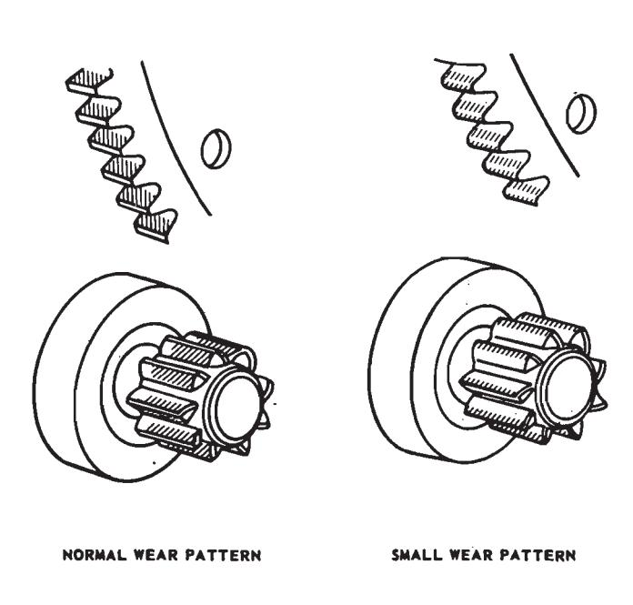
Fig. 11 — Pinion and Ring Gear Wear Patterns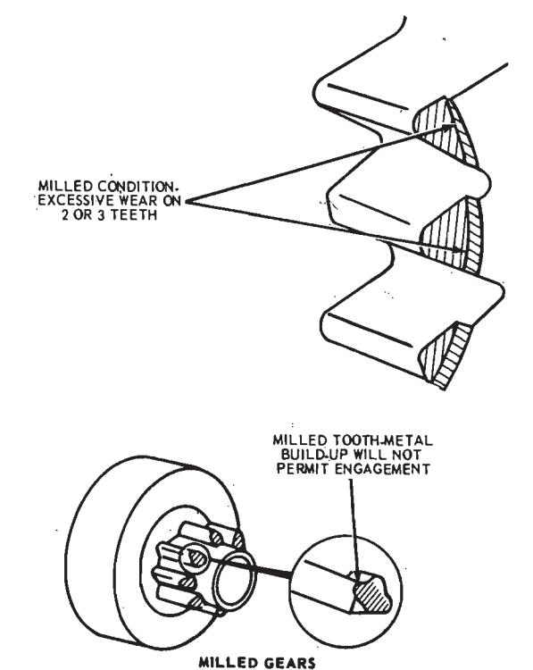
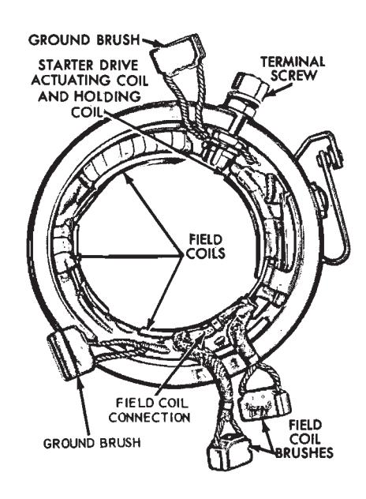
Fig. 12 — Field Coil Assembly -
Loosen the through bolts enough to allow removal of the drive end housing and the starter drive plunger lever return spring. If the starter has a needle bearing, and the bearing is not being replaced, insert a dummy shaft in the housing to prevent loss of any of the bearing needles. Before assembly, apply a small amount of grease to the needles.
-
Remove the pivot pin retaining the starter drive plunger lever and remove the lever.
-
Remove the drive gear stop ring retainer and stop ring from the end of the armature shaft and remove the drive gear assembly.
-
Apply a thin coating of Lubriplate 777 on the armature shaft splines. Install the drive gear assembly on the armature shaft and install a new stop ring.
-
Position the starter gear plunger lever on the starter frame and install the pivot pin. Be sure that the plunger lever properly engages the starter drive assembly.
-
Install a new stop-ring retainer. Position the starter drive plunger lever return spring and drive end housing to the starter frame, and then tighten the through bolts to specifications (55-75 inch pounds).
-
Position the starter drive plunger lever cover and the brush cover band, with its gasket, on the starter. Tighten the brush cover band retaining screw
Brush Replacement
Replace the starter brushes when they are worn to 1/4 inch. Always install a complete set of new brushes.
- Loosen and remove the brush cover band, gasket, and starter drive plunger lever cover. Remove the brushes from their holders.
- Remove the two through bolts from the starter frame.
- Remove the drive end housing, and the plunger lever return spring. If the starter has a needle bearing, and the bearing is not being replaced, insert a dummy shaft in the housing to prevent loss of any of the bearing needles. Before assembly, apply a small amount of grease to the needles
- Remove the starter drive plunger lever pivot pin and lever, and remove the armature.
- Remove the brush end plate.
- Remove the ground brush retaining screws from the frame and remove the brushes (cut the ground brush nearest the starter terminal from the brush terminal block, as close to the brush lead terminal as possible).
- Cut the insulated brush leads from the field coils, as close to the field connection point as possible.
- Clean and inspect the starter
- Replace the brush end plate if the insulator between the field brush holder and the end plate is cracked or broken.
- Position the new insulated field brushes lead on the field coil connection. Position and crimp the clip provided with the brushes to hold the brush lead to the connection. Solder the lead, clip, and connection together, using rosin core solder (Fig. 12). Use a 300-watt iron.
- Install the ground brush leads to the frame with the retaining screws. The ground brush with the over-size unthreaded hole is placed under the terminal from which the previous ground brush was cut.
- Clean the commutator with 00 or 000 sandpaper.
- Position the brush end plate to the starter frame, with the end plate boss in the frame slot.
- Position the fiber washer on the commutator end of the armature shaft and install the armature in the starter frame.
- Install the starter drive gear plunger lever to the frame and starter drive assembly, and install the pivot
- Position the return spring on the plunger lever, and the drive end housing to the starter frame. Install the through bolts and tighten to specified torque (55-75 inch pounds). Be sure that the stop ring retainer is seated properly in the drive end hous-
- Install the commutator brushes in the brush holders. Center the brush springs on the brushes.
- Position the plunger lever cover and the brush cover band, with its gasket, on the starter. Tighten the band retaining screw.
- Connect the starter to a battery to check its operation.
Armature Replacement
- Loosen the brush cover band retaining screw and remove the brush cover band, gasket, and the starter drive plunger lever cover. Remove the brushes from their holders.
- Remove the through bolts, the drive end housing, and the drive plunger lever return spring. If the starter has a needle bearing, and the bearing is not being replaced, insert a dummy shaft in the housing to prevent loss of any of the bearing needles. Before assembly, apply a small amount of grease to the needles.
- Remove the pivot pin retaining the starter gear plunger lever, and remove the lever.
- Remove the armature. If the starter drive gear assembly is being reused, remove the stop ring retainer and the stop ring from the end of the armature shaft, and remove the drive.
- Place the drive gear assembly on the new armature with a new stop
- Install the fiber thrust washer on the commutator end of the armature shaft and install the armature.
- Position the drive gear plunger lever to the frame and drive gear assembly and install the pivot pin.
- Position the drive plunger lever return spring, the drive end housing and the front end plate to the starter frame, and then install and tighten the through bolts to specification. Be sure that the stop ring retainer is seated properly in the drive housing. If the starter has needle bearings, apply a small amount of grease to the needles before installing the drive housing.
- Place the brushes in their holders, and center the brush springs on the brushes.
- Position the plunger lever cover and the brush cover band, with its gasket, and then tighten the retaining screw.
- Connect the starter to a battery to check its operation.
Starter Terminal
Removal
-
Loosen the brush cover band retaining screw and remove the brush cover band and the starter drive plunger lever cover. Observe the lead positions for assembly and then remove the commutator brushes from the brush holders.
-
Remove the through bolts, starter drive end housing, starter drive plunger lever return spring, and the brush end plate.
-
Remove the pivot pin retaining the starter gear plunger lever and remove the lever and the armature as- sembly.
-
Unsolder the field coil and solenoid wire leads from the terminal screw. Use a 300-watt soldering iron.
Remove the starter terminal nut, washer, insulator and terminal from the starter frame.
Installation
- Install the new starter terminal, insulator, washers, uand etaining nut in the frame (Fig. 8). Be sure to position the slot in the screw perpendicular to the frame end surface.
- Solder the field coils and solenoid wire to the starter terminal using rosin core solder. Use a 300-watt
- Check for continuity and grounds in the assembled coils.
- Position the starter brush end plate to the frame with the end plate boss in the frame slot.
- Position the fiber thrust washer on the commutator end of the armature shaft and position the armature in the starter frame.
- Position the starter drive gear plunger lever to the frame and starter drive assembly, and install the pivot pin.
- Position the starter drive plunger lever return spring and the drive end housing to the frame and install and tighten the through bolts to specification (55-75 in-lbs). Do not pinch the brush leads between the brush plate and the frame. Be sure that the stop ring retainer is seated properly in the drive housing.
- Install the brushes in the brush holders. Be sure to center the brush springs on the brushes.
- Position the drive gear plunger lever cover on the starter and install the brush cover band with a gasket. Tighten the band retaining screw.
- Check the starter no-load current draw.